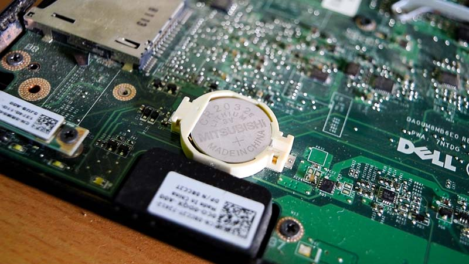
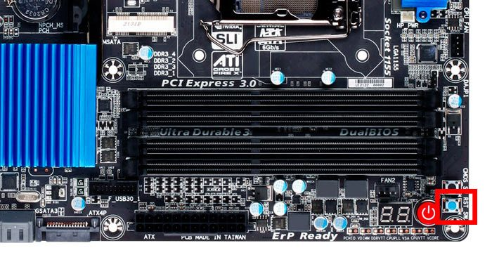
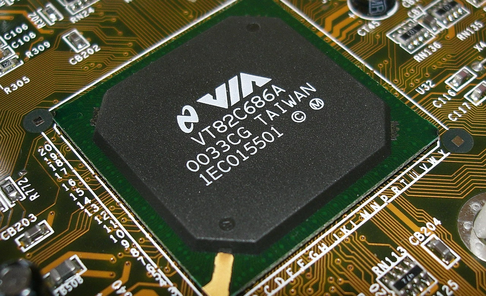
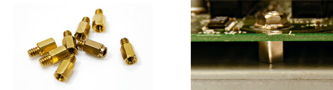

CMOS

Il CMOS è un piccolo chip di memoria volatile contente alcune informazioni vitali per il sistema al quale questo accede durante la fase di boot, tali sono data, ora, password dell'amministratore e dati di configurazione dei componenti installati. Spesso confuso con la relativa batteria, il CMOS è in realtà situato all'interno del Southbridge e non è visibile sulla scheda madre. Riguardo alla suddetta batteria, questa alimenta costantamente il CMOS anche a pc spento, in modo che i dati di questo non vengano perduti in quanto fondamentali per il funzionamento del sistema. La batteria ha una durata stimata tra i 2 e i 10 anni, fortemente influenzata dalla temperatura e dall'utilizzo dell'utente.
Tasto reset

Il tasto reset, presente solitamente solo sulle schede madri più recenti, serve al ripristino della memoria CMOS alle impostazioni di fabbrica. Altri metodi sono la semplice rimozione della batteria del CMOS a pc spento per qualche secondo (dato che questa è volatile si resetta se priva di alimentazione) oppure il reset via software accedendo al BIOS.
Southbridge

Il Southbridge è un chip incaricato della gestione di tutti i processsi di I/O, mettendo in comunicazione la RAM e CPU con le porte USB, SATA, PCI ecc. tramite il Northbridge. Northbridge e Southbridge, sempre comunque presenti nell'architettura von Neumann, non sono però sempre individuabili, dal 2011 infatti Intel ed AMD hanno spostato il Northbridge direttamente su uno dei pin della CPU mentre il Southbridge viene talvolta lasciato esterno ed altre volte integrato anchesso nel processore.
Viti della scheda madre
Per installare la scheda madre sul case bisogna prima di tutto assicurarsi che siano di grandezze compatibili (quelle più comuni sono ATX, mini-ATX e microATX). Solitamente i case con fattore di forma ATX (i più grandi) includono anche tutte quelle più piccole. Vanno quindi individuati i fori sul case corrispondenti alla grandezza della scheda madre (viene solitamente stampato accanto ad ogni vite per quale grandezza è utile) e su di queste vanno installati i distanziatori, come in figura.
>

I distanziatori impediscono che la scheda madre vada in cortocircuito a contatto con il case, dato che una volta installati sono a contatto con la messa a terra. Va quindi inserita la mascherina e la scheda madre facendo attenzione che i distanziatori combacino con i fori sulla scheda, procedendo ad avvitare queste diagonalmente.